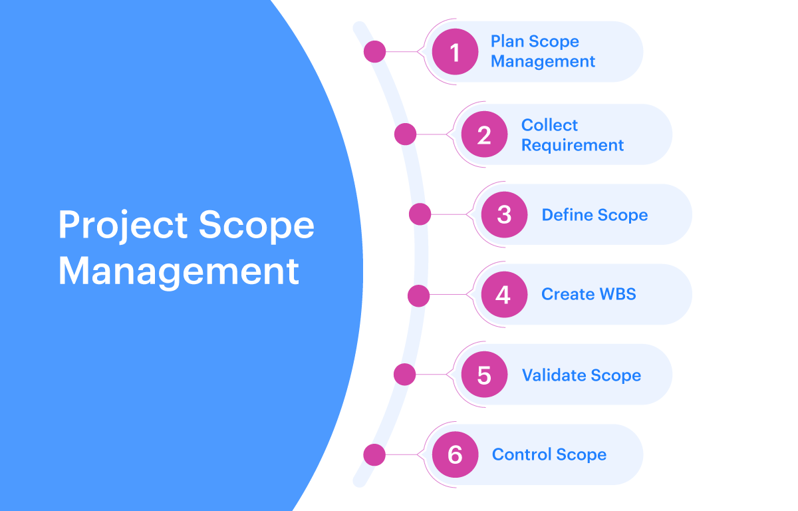
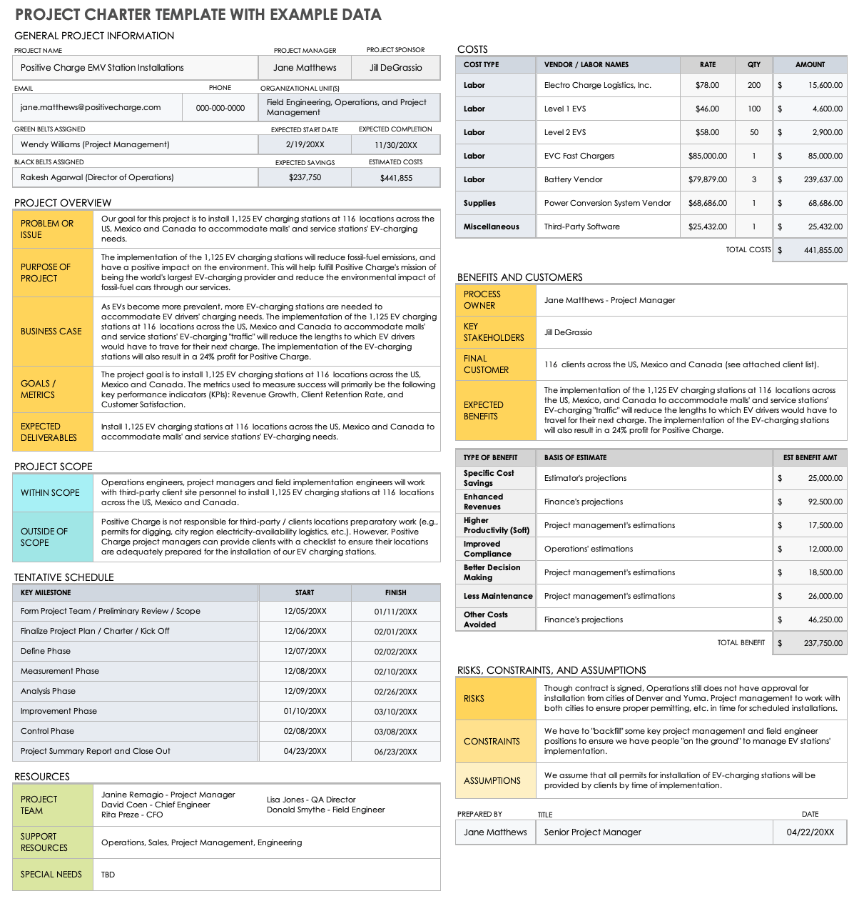
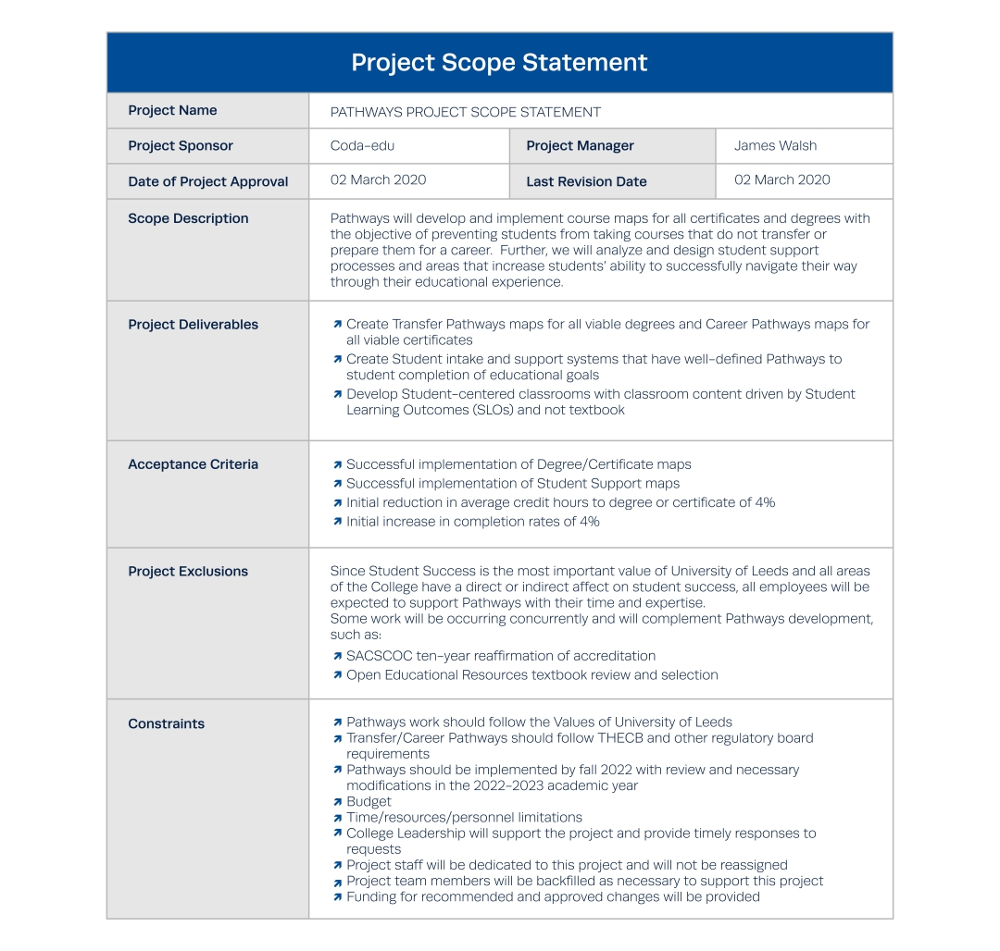

Defining Scope and the Project Scope Statement
By: Daniel Cisneros Siliezar
In Agile project management, it is important to be as flexible as possible and to define a scope for the project. Scope is defined as all of the work involved in creating the products of the project and processes utilized to make them. Needs and wants from the customer will always change, so project managers will have to adjust accordingly. Agile project managers must familiarize themselves with the scope definition process and how to create a project scope statement. By doing this, project teams and customers will have a better understanding of the overall project and be more flexible if issues arise.
The processes of project scope management
In project scope management, there are six main processes that help the project team and stakeholders have the same understanding of what products the project will produce. The following definitions are taken from the Information Technology Project Management book by Kathy Schwalbe 9th Edition, pages 202-203:
- Planning scope management - involves determining how the project's scope will be managed.
- Collecting requirements - involves defining and recording the features of the products and processes used to create those products.
- Defining scope - involves reviewing the project scope statement.
- Creating the WBS - involves creating a work breakdown structure that subdivides the deliverables into more manageable components.
- Validating scope - involves formalizing acceptance of the project deliverables.
- Controlling scope - involves controlling changes to project scope throughout the project.
All processes are equally important to each other, but the main focus for this blog post comes after planning scope management and collecting requirements - defining scope. This process requires providing a detailed description of the work needed to complete the project. It is important to have a good description of the project, as it will benefit project success by improving the accuracy of time, cost, and resources estimates (Schwalbe, 2018). It also provides a general baseline for measuring performance and control of the project, as well as benefiting the communication of work responsibilities.
Inputs and Outputs of Scope Definition
The main tools for success in regards to scope definition include the following:
- Expert judgment
- Data analysis
- Individual and team skills
- Decision making
- Product analysis
The outputs of scope definition would provide the project scope statement and document updates of the project.
Expert Judgment
This tool means to acquire an expert (or a few) within a particular field to acquire a skilled opinion. This opinion will be important for estimating timelines and potential resources, as well as other quantitative details of the project. Expert judgment can be applied to various situations, but it is subjective and may require guidelines.
Data Analysis
The next tool means to use data analytics to identify patterns and/or trends that could influence the success or failure rate of a project. Project managers would also use this information to improve resource management skills. These insights would give project managers the proper details to allocate resources in order to meet the objectives and deadlines of the project.
Interpersonal and Team Skills
It is important for project managers to see the interpersonal and team skills within their subordinates. Project managers must know how to communicate and motivate their teams in order to complete the project in a timely manner and with great quality. Project managers must be leaders and push the team to continue when progress is slow, as well as negotiators to keep stakeholders informed and the team satisfied. Lastly, project managers should encourage a sense of teamwork within the team under their lead. Team staff should be able to work together and prevent conflicts as much as possible.
Decision making
With the information acquired from the tools defined above, project managers must make intellectual decisions throughout the project. Throughout the project, the constraints, quality, and acceptance criteria may change depending on the needs of the customer(s) and/or stakeholder(s). These decisions could potentially make or break the project, so it is important for project managers to analyze their information and decide intelligently based on the information.
Product Analysis
This last tool is used to define scope by asking questions about a project deliverable (i.e. a product) and developing answers that explain the use, important details, and other information of what will be produced. An example of this would be asking how the product would work and look like, as well as what it would cost and when is the deadline to deliver the product.
Project Scope Statement and Charter
An effective document that project managers can make after the utilization of the tools above would be a project charter. The charter provides a basis by describing the scope, time, and cost goals for the project objectives and acceptance criteria, as well as conveying an approach to accomplishing said goals and roles/responsibilities of project stakeholders. An example of a project charter is given below.
Project scope statements are documents that should at least include the description of product scope, user acceptance criteria, and information regarding all deliverables of the project. It is useful to note project boundaries, constraints, and assumptions. The statement should also reference supporting documentation, which includes product specifications (affects what products are produced) or corporate policies (affects how products are produced). Project managers should note that as time passes, the project scope should become more specific and clear, which are updated by versions of the project statement (pictured below).
Conclusion
In summary, Agile project managers should be able to define the scope for a given project. They must use the tools of expert judgment, data analysis, interpersonal and team skills, decision making, and product analysis to effectively define their project scope. Lastly, project managers should be able to communicate the scope definition in documentation, such as providing a project charter and project scope statement. This information can be used to list out the information of the project, overall deliverables, and characteristics of products produced as part of the project to the project team and stakeholders, so that everyone has the same understanding of the project. By providing a good definition of the project scope, project managers will be able to adapt accordingly and complete the project by the deadline, as well as satisfying the team and customer in the process.
References
- Information Technology Project Management: Kathy Schwable 9th Edition
- Expert Judgment
- Data Analysis
- Interpersonal Skills
A lot of this information comes from the textbook listed below, but not plagiarized